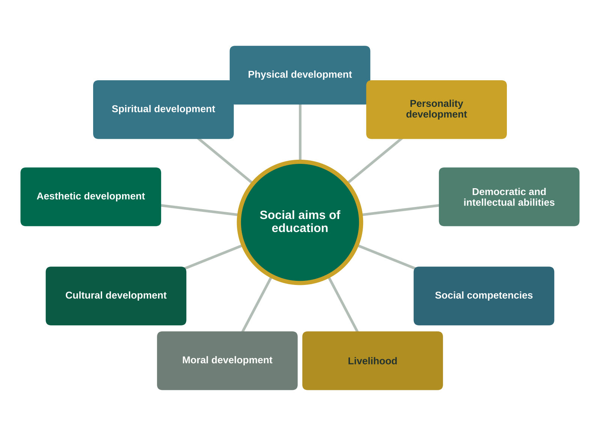
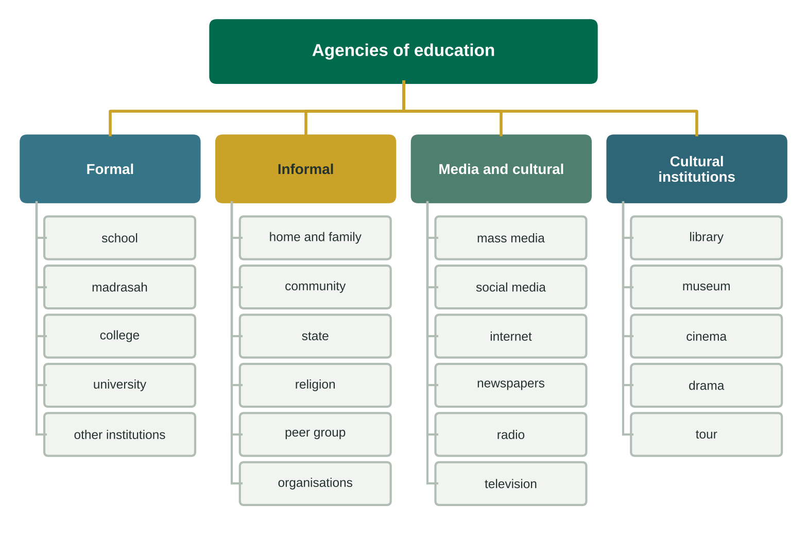
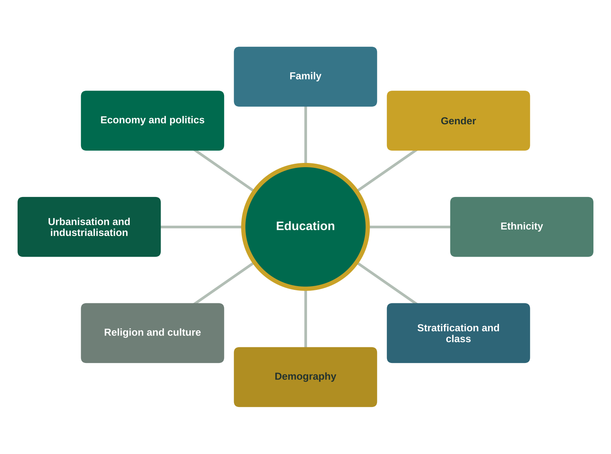
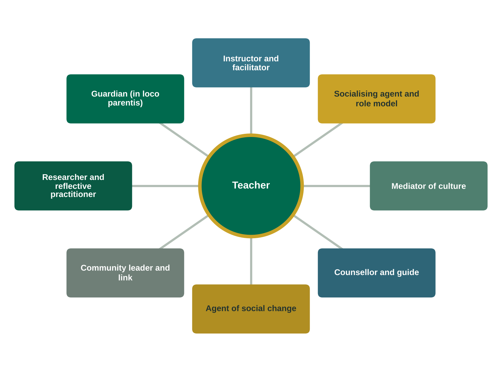
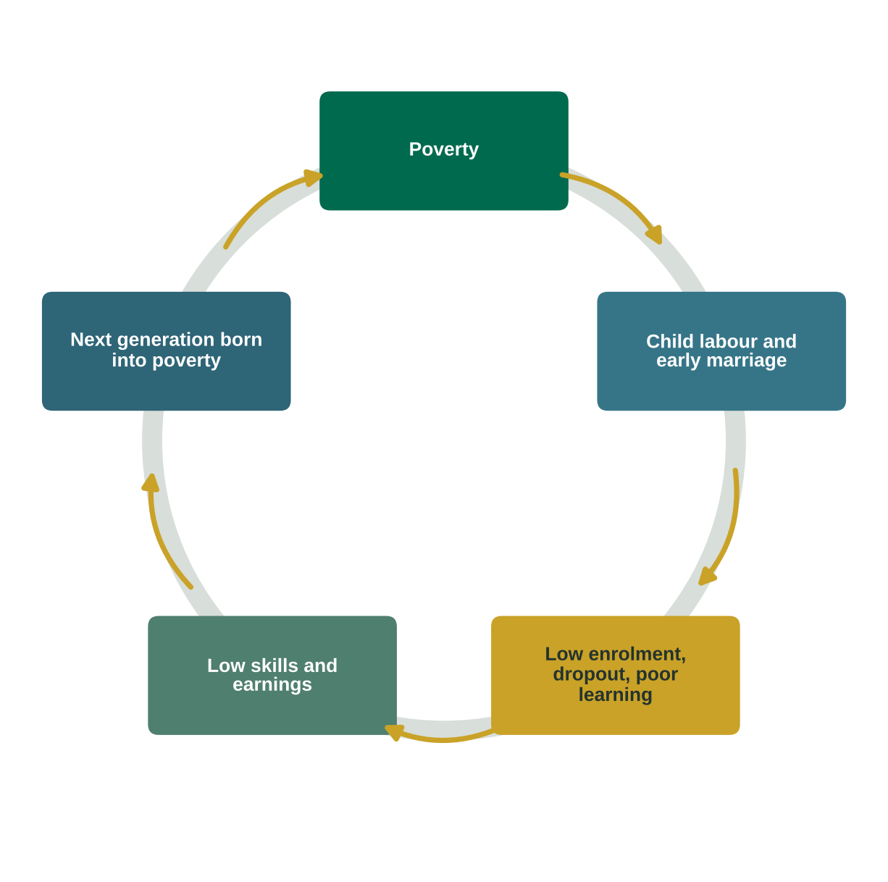

PC 116 Sociological Foundation of Education
Society, social agencies, social bases and functions of education, and social problems in Bangladesh
Contents
- Unit 1: The Sociological Approach to Studying Education
- Unit 2: Social Aims of Education
- Unit 3: Social Agencies of Education
- Unit 4: Social Bases of Education (with reference to Bangladesh)
- Unit 5: Social Functions of Education
- Unit 6: Sociology of Pedagogy and Andragogy
- Unit 7: Social Problems and Education in Bangladesh
- Exam Preparation Bank
- References
About this course
Education is a social process that takes place in, and is shaped by, society. This course uses sociological concepts and theories (functionalism, conflict theory, symbolic interactionism, and the organic and inorganic approaches) to analyse the social aims of education, the agencies through which education happens, the social bases (family, gender, ethnicity, stratification, religion, culture, urbanisation, economy and politics) that shape access and outcomes, and the social functions of education such as socialisation, citizenship and social change. It ends with the sociology of teaching as a profession and the social problems that affect education in Bangladesh.
Course objectives
Explain the concept, nature and scope of sociology and the sociological approach to education.
Analyse the social aims, agencies, bases and functions of education.
Explain the social contexts of pedagogy and andragogy and the social roles and ethics of the teacher.
Analyse major social problems of Bangladesh and the role of education in addressing them.
Each unit follows the official syllabus order. Read the narrative first, then the Key point boxes, then test yourself with the Exam focus questions.
Golden boxes = must-remember ideas. Teal boxes = definitions and study tips. Green boxes = Bangladesh context.
The final chapter is a question bank (MCQs with answers, short and broad questions) in the style of university examinations, followed by full references in APA 7th style.
Statistics on enrolment, budgets and policies change every year. Before an exam, check the latest BANBEIS, DPE, UGC and UNESCO figures.
Unit 1: The Sociological Approach to Studying Education
1.1 Concept, nature and scope of sociology
Sociology (from the Latin socius, companion, and Greek logos, study) was named by Auguste Comte (1838), who is called the father of sociology. It is "the scientific study of human social life, groups and societies" (Giddens & Sutton, 2021). Max Weber defined it as "a science which attempts the interpretive understanding of social action in order to arrive at a causal explanation of its course and effects."
Nature: sociology is a social science (not a natural science); it is categorical (describes what is, not what ought to be), pure as well as applied, abstract (studies patterns, not individual events), generalising, and both rational and empirical.
Scope: two schools of thought:
Formal (specialistic) school (Simmel, Tönnies, Weber): sociology studies the forms of social relationships, such as cooperation, competition and conflict.
Synthetic school (Durkheim, Hobhouse, Sorokin): sociology is a general science synthesising all social sciences to study society as a whole.
Sociological imagination (C. Wright Mills, 1959): the ability to link "personal troubles" (a child dropping out) to "public issues" (poverty, child labour, policy).
1.2 Sociology of education and educational sociology
Educational sociology (early 20th century, Lester Ward, George Payne) applied sociology to solve educational problems; it was practical and reform-oriented.
Sociology of education (from the 1950s) is the scientific study of education as a social institution and its relation to other institutions, structures and processes. It asks: how does education reproduce or reduce inequality? What does schooling do for society? How are knowledge and identities constructed in classrooms?
Importance of the sociological approach: it reveals the social causes of educational success and failure; explains the hidden curriculum; informs policy on equity; helps teachers understand diverse learners; and connects school with the wider community.
1.3 Major theoretical perspectives

Figure 1. Three classic sociological perspectives on education
Functionalism. Durkheim (1956) saw education as "the methodical socialisation of the young generation" to create the social solidarity a society needs. Parsons (1959) saw the school class as the main agent for transferring children from particularistic family values to the universalistic, achievement-based values of society, and for allocating them to adult roles. Davis and Moore (1945) argued that education sorts people by talent into unequally rewarded positions.
Conflict theory. Bowles and Gintis (1976), Schooling in Capitalist America: the correspondence principle, according to which the social relations of school (hierarchy, obedience, external rewards) correspond to those of the capitalist workplace. Bourdieu and Passeron (1977): schools reward cultural capital (language, tastes and dispositions of the dominant class), producing cultural reproduction and symbolic violence. Collins (1979): credentialism.
Symbolic interactionism. Becker's (1952) study of how teachers judge "ideal pupils"; labelling theory; Rosenthal and Jacobson's (1968) Pygmalion in the Classroom showed teacher expectations can produce a self-fulfilling prophecy.
1.4 Inorganic and organic approaches
These are two broad ways of understanding the relationship between society and its parts, including education.
| Basis | Inorganic (mechanical / atomistic) approach | Organic approach |
|---|---|---|
| View of society | An aggregate of individuals, like parts of a machine, assembled by contract | A living organism whose parts (institutions) are interdependent, like organs of a body |
| Key thinkers | Hobbes, Locke, Rousseau (social contract); individualism | Herbert Spencer (organic analogy), Durkheim, Plato (the state as the individual "writ large") |
| Primacy | The individual comes first; society serves individual interests | Society comes first; individuals find meaning in their social functions |
| Education | Emphasises individual development, rights and freedom | Emphasises socialisation, social efficiency, duties and cohesion |
| Durkheim's terms | Closer to "organic solidarity" in a complex society of specialised individuals | (Note: Durkheim's mechanical solidarity is based on likeness in simple societies; organic solidarity on interdependence in complex ones) |
Do not confuse the "organic approach" (society as an organism, Spencer) with Durkheim's "organic solidarity" (interdependence in modern societies with a complex division of labour). Examiners sometimes test exactly this distinction.
Likely questions: "What is the sociological approach to education? Explain its importance." "Compare the functionalist and conflict perspectives on education." "Distinguish between the organic and inorganic approaches."
Unit 2: Social Aims of Education
Education serves social aims when it prepares individuals to live productively and harmoniously in society. The syllabus lists nine aims; a holistic view sees them as interrelated.

Figure 2. The social aims of education
| Aim | Meaning | How education achieves it | Bangladesh example |
|---|---|---|---|
| Physical development | Health, fitness, motor skills, healthy habits | Physical education, games, health education, school meals | Mandatory Physical Education and Health subject; inter-school sports |
| Development of personality | Integrated growth of cognitive, emotional, social and moral traits | Child-centred teaching, co-curricular activities, counselling | Debate clubs, scouts, cultural programmes |
| Democratic and intellectual abilities | Critical thinking, rational discussion, tolerance, participation | Discussion methods, student councils, civics | Student cabinet elections in secondary schools |
| Social competencies | Cooperation, communication, empathy, leadership | Group work, community service, SEL | Group projects in NCTB curricula |
| Livelihood | Knowledge and skills for earning a living | TVET, career guidance, entrepreneurship | SSC (Vocational), skills programmes |
| Moral development | Honesty, justice, responsibility | Moral and religious education, role models | Religion and Moral Education subject |
| Cultural development | Understanding and transmitting heritage; respect for diverse cultures | Literature, history, festivals, arts | Celebrating Pohela Boishakh, Language Day |
| Aesthetic development | Appreciation and creation of beauty | Music, art, crafts, literature | Arts and crafts, music in primary curriculum |
| Spiritual development | Inner values, meaning, connection beyond the self | Religious education, reflection, values education | Religious education for all major faiths |
A balanced answer explains that these aims must be integrated. Over-emphasis on livelihood risks narrow instrumentalism; over-emphasis on spiritual or cultural aims without livelihood risks irrelevance. Dewey's idea of "social efficiency" combines individual growth with social contribution.
Unit 3: Social Agencies of Education
3.1 Concept
Agencies of education are the institutions and forces in society that educate individuals, deliberately or incidentally. They are classified as formal (deliberate, organised) and informal (spontaneous, incidental). Some writers add non-formal agencies (literacy centres, training programmes), as well as active (two-way: family, community) and passive (one-way: newspapers, radio) agencies.

Figure 3. Agencies of education
3.2 Formal agencies
School: the main formal agency. Functions: systematic instruction, socialisation, character building, transmission of culture, preparation for citizenship and work, selection and certification. Dewey: "the school is a special environment" that simplifies, purifies and balances.
Madrasah: formal agency combining religious and general education, central for many rural families in Bangladesh.
College and university: advanced knowledge, research, professional preparation and leadership; universities also act as centres of critical thought and social movements (the 1952 Language Movement and 1969 uprising were led by students).
Other institutions: technical institutes, teacher training institutes, academies, and training centres.
3.3 Informal agencies
| Agency | Educational role |
|---|---|
| Home / family | The first school and the mother as the first teacher; primary socialisation, language, values, habits, emotional security, attitudes to learning |
| Community | Norms, customs, festivals, occupational skills, social control; community support for schools (SMCs) |
| State | Policy, law, funding, curricula, compulsory education, regulation, civic education |
| Organisations (clubs, NGOs, scouts) | Leadership, service, specialised skills, non-formal education |
| Religion | Moral and spiritual values, rituals, community identity; mosques, temples, churches and pagodas as learning places |
| Peer group | Secondary socialisation, identity, norms of behaviour, sometimes delinquency or bullying |
| Mass media (newspapers, magazines, radio, television, cinema, drama) | Information, awareness, entertainment, shaping opinions and values; educational TV and radio (Sangsad TV lessons) |
| Social media and the internet | Instant information, networking, self-learning, online courses; risks of misinformation, cyberbullying and addiction |
| Library and museum | Self-directed learning, research, heritage (National Museum, Liberation War Museum) |
| Tours and excursions | Direct experience of places, cultures and history |
3.4 Relationship among agencies
The agencies complement each other; when they conflict (for example the media promoting values contrary to school teaching), learners face confusion. Effective education requires coordination, such as home–school partnerships, community participation and responsible media.
Unit 4: Social Bases of Education (with reference to Bangladesh)
4.1 Family
Family structure (nuclear or joint), income, parental education, especially mothers' education, and the home learning environment strongly predict school outcomes. Cultural capital (Bourdieu), social capital (Coleman, 1988) and parental involvement (Epstein, 2001, six types of involvement) explain why. In Bangladesh, first-generation learners in poor rural families face the greatest disadvantages, while urban middle-class families invest heavily in private tutoring.
4.2 Gender
Gender norms influence expectations, opportunities and treatment. Bangladesh achieved gender parity in enrolment at primary and secondary level through stipends and incentives, but girls still face early marriage, safety concerns, domestic burden and under-representation in STEM, TVET and higher education leadership. Boys in poor families face pressure to work and growing dropout rates. See PC 122.
4.3 Race and ethnicity
Bangladesh is home to more than 50 ethnic minority groups (for example Chakma, Marma, Tripura, Santal, Garo, Manipuri), mainly in the Chittagong Hill Tracts and the northern plains. Barriers include language (Bangla-medium instruction), remoteness, poverty and cultural irrelevance of curricula. Since 2017 NCTB has provided pre-primary and early-grade textbooks in five ethnic languages (Chakma, Marma, Kokborok/Tripura, Garo/Achik and Sadri), an example of mother-tongue-based multilingual education (MTB-MLE).
4.4 Social stratification
Social stratification is the hierarchical arrangement of individuals and groups by wealth, power and prestige (class, caste, status). It shapes access to quality schools, private tutoring, English-medium education and higher education. Bangladesh's education system is stratified into parallel streams (English-medium, Bangla-medium general, Alia and Qawmi madrasah), which often mirror and reproduce class divisions (Bourdieu's reproduction thesis). Education can also enable social mobility (vertical mobility through credentials and occupation).
4.5 Demographic factors
Population size, growth, density, age structure and migration affect educational demand and planning. Bangladesh's large youth population (the demographic dividend) creates both opportunity and pressure on schools, teachers and the labour market. High density means overcrowded classrooms; migration to cities creates demand for urban schools; climate-induced displacement affects schooling in coastal areas.
4.6 Religion
Religion shapes values, worldviews, educational institutions (madrasahs, tols, mission schools) and attitudes towards girls' education and science. Bangladesh's Constitution guarantees religious freedom; religious education is taught according to each student's faith. Education can promote interfaith understanding and tolerance.
4.7 Culture
Culture is "that complex whole which includes knowledge, belief, art, morals, law, custom, and any other capabilities and habits acquired by man as a member of society" (Tylor, 1871). Education transmits material and non-material culture. Cultural lag (Ogburn, 1922) occurs when non-material culture (values, institutions) lags behind material and technological change; for example, online learning tools arrived faster than norms for their responsible use.
4.8 Urbanisation
Rapid urbanisation (Dhaka is one of the world's fastest-growing megacities) creates both opportunities (more schools, colleges, jobs) and problems: overcrowding, high costs, slum children out of school, child labour, rising inequality between elite and poor schools.
4.9 Industrialisation
Industrialisation demands a literate, skilled and disciplined workforce; it historically drove mass schooling in Europe. In Bangladesh, the ready-made garment (RMG) sector has transformed women's employment and created demand for skills and TVET, while also drawing adolescents out of school.
4.10 Economic factors
National income, public spending (about 2% of GDP), household income and the opportunity cost of schooling shape participation. Human capital theory (Schultz, Becker) sees education as investment; conflict theorists highlight how economic inequality limits educational opportunity.
4.11 Political factors
Political ideology, stability, governance and student politics influence education policy, curriculum content (for example the history of the Liberation War), appointments and campus climate. Frequent policy changes and politicisation of institutions are recurrent issues in Bangladesh.

Figure 4. Social bases that shape educational access and outcomes
Unit 5: Social Functions of Education
5.1 Socialisation
Socialisation is the lifelong process through which individuals learn the culture, norms, values and roles of their society and develop a social self. Primary socialisation occurs in the family; secondary socialisation occurs in schools, peer groups, workplaces and media. Key theorists:
G. H. Mead: the self develops through the "I" (spontaneous) and the "me" (socialised self) in stages of play, game and the generalised other.
C. H. Cooley: the looking-glass self: we see ourselves as we imagine others see us.
Durkheim: education as "methodical socialisation".
Schools socialise through the formal curriculum and the hidden curriculum (Jackson, 1968): punctuality, obedience, competition, gender roles and respect for authority.
5.2 Citizenship training
Education prepares informed, responsible and active citizens with knowledge of rights and duties, democratic values, critical thinking and participation skills. Marshall (1950) distinguished civil, political and social citizenship. Methods: civics curricula, student councils, debates, community service, mock parliaments and global citizenship education.
5.3 Conservation and transmission of culture
Education preserves the cultural heritage (language, literature, history, arts, values) and transmits it to new generations. In Bangladesh, the Language Movement, the Liberation War and Bengali festivals are deliberately taught.
5.4 Innovation
Education is also a source of new knowledge and ideas through research, creativity, critical thinking and scientific inquiry. Universities, in particular, generate innovations in science, technology, arts and social thought.
5.5 Social change and development
Social change is the alteration of social structures, relationships and cultural patterns over time. Education is both a cause (an agent) and an effect (a consequence) of social change: it spreads new ideas, promotes modernisation and mobility, empowers women and disadvantaged groups, and supports economic development. Yet it can also preserve the status quo. The extent of education's power is debated (Counts versus reproduction theorists).

Figure 5. Education as both cause and effect of social change
5.6 Adapting to social changes
Education helps individuals and societies adapt to change by developing flexibility, problem-solving, digital literacy and lifelong learning; by updating curricula; and by reducing cultural lag. Examples: digital learning during COVID-19, climate adaptation education, and new skills for the Fourth Industrial Revolution.
Likely questions: "Explain the role of education in socialisation." "Is education an agent of social change or a product of it? Discuss." "How does education conserve and transmit culture?"
Unit 6: Sociology of Pedagogy and Andragogy
6.1 Concepts
Pedagogy: the art and science of teaching children; teacher-directed, subject-centred, with extrinsic motivation.
Andragogy: "the art and science of helping adults learn" (Knowles, 1980); self-directed, experience-based, problem-centred, intrinsically motivated.
6.2 Social contexts of learning and teaching
| Social context | Children (pedagogy) | Adults (andragogy) |
|---|---|---|
| Social role | Dependent learners; student is the main role | Multiple roles: worker, parent, citizen |
| Reason for learning | Curriculum requirements, examinations, parents | Life tasks, work, social responsibilities |
| Group dynamics | Age-graded classes, peer influence | Heterogeneous groups, rich experience, mutual respect |
| Power relations | Teacher has formal authority | More equal relationship; facilitator |
| Barriers | Family background, child labour | Time, work and family burdens, low confidence, previous negative schooling |
| Setting | Schools, formal | NFE centres, workplaces, community, online |
| Social outcomes | Socialisation, preparation for adult roles | Empowerment, livelihood, civic participation, social change (Freire) |
Social learning theory (Bandura, 1977) and situated learning in communities of practice (Lave & Wenger, 1991) show that both children and adults learn through observation and participation in social contexts.
6.3 Teaching as a profession
A profession is an occupation that requires specialised knowledge and long training, provides an essential public service, has autonomy, a code of ethics, a professional association and public recognition (Lieberman, 1956; Hoyle, 1980). Teaching meets many criteria but is often called a semi-profession (Etzioni, 1969) because of lower autonomy, status and pay, and because entry standards vary. Professionalisation of teaching in Bangladesh involves NTRCA certification, the BEd/MEd qualifications, the draft National Teacher Standards and continuing professional development.
6.4 Teaching ethics and values
A teacher's code of ethics typically includes commitment to:
Students: respect for dignity, fairness, non-discrimination, protection from harm, confidentiality, no corporal punishment, no private tutoring of one's own students for profit (a specific Bangladeshi rule under the 2012 coaching policy).
The profession: competence, continuous learning, integrity, collegiality.
Parents and community: honest communication, partnership.
Society and nation: promoting democratic values, national integrity and human rights.
UNESCO/ILO's Recommendation concerning the Status of Teachers (1966) is the international reference document.
6.5 Teaching qualities
Subject mastery; pedagogical skills; communication; empathy and warmth; fairness; patience; enthusiasm; creativity; leadership; reflective attitude; integrity; and cultural sensitivity. Research consistently shows that warm, high-expectation teachers who build relationships achieve better learning outcomes.
6.6 Social roles of the teacher

Figure 6. The social roles of the teacher
Unit 7: Social Problems and Education in Bangladesh
7.1 Framework
A social problem is a condition that a significant number of people consider harmful and believe can be changed through collective action. For each problem, analyse causes, effects on education and the role of education in prevention and solution.
| Problem | Causes | Effects on education | Role of education |
|---|---|---|---|
| Poverty | Low income, unemployment, landlessness, disasters | Dropout, child labour, malnutrition, absenteeism | Free education, stipends, school meals, skills training; education as the most effective route out of poverty |
| Child labour | Poverty, low value of schooling, demand for cheap labour | Non-enrolment, dropout, low achievement | Compulsory education, flexible NFE (e.g. Second Chance), awareness, enforcement of the Labour Act 2006 |
| Child marriage | Poverty, social norms, dowry, insecurity of girls | Girls' dropout, early pregnancy, intergenerational disadvantage | Keeping girls in school, stipends, life-skills and sexuality education, awareness of the Child Marriage Restraint Act 2017 |
| Crime | Poverty, unemployment, drugs, weak institutions | Unsafe schools, violence | Values education, skills, counselling, community policing |
| Juvenile delinquency | Family breakdown, peer pressure, neglect, media | Truancy, school violence | Guidance and counselling, co-curricular activities, parental involvement |
| Violence | Political conflict, domestic violence, bullying | Fear, absenteeism, trauma | Peace education, conflict resolution, safe schools, SEL |
| Trafficking | Poverty, migration, false promises | Missing children, exploitation | Awareness programmes, community vigilance, education for girls |
| Sexual harassment | Patriarchy, impunity, weak enforcement | Girls' dropout, fear on the way to school | High Court directive (2009) for complaint committees, gender education, safe transport |
| Dowry | Patriarchal norms, consumerism | Pressure for early marriage, violence | Gender equality education, enforcement of the Dowry Prohibition Act 2018 |
| Divorce and family breakdown | Social change, conflict | Emotional distress, low achievement | Counselling, family life education |
| Drug abuse | Availability (yaba, phensedyl), peer pressure, frustration | Absenteeism, violence, dropout | Drug education, counselling, sports, early identification |
| Cyber addiction | Smartphone use, gaming, social media | Poor concentration, sleep loss, isolation | Digital citizenship, media literacy, balanced use |
| Slums | Rural–urban migration, poverty | Lack of schools, child labour | Urban NFE schools (e.g. BRAC, UCEP), community learning centres |
| Group unrest and conflicts | Political polarisation, ethnic tension, land disputes | Campus violence, closure, session jams | Civic education, dialogue, depoliticisation of campuses, peace education |

Figure 7. The vicious cycle of poverty and low education
Education can break the cycle above, which is why targeted interventions (stipends, school meals, second-chance education and girls' secondary stipends) are central to Bangladesh's education strategy. Always show both the cycle and the intervention points.
Exam Preparation Bank
A. Multiple-choice questions
1. The term "sociology" was coined by:
(a) Durkheim (b) Comte (c) Weber (d) Spencer
Show answer
Answer: (b)
2. Education as "methodical socialisation of the young generation" is the view of:
(a) Weber (b) Durkheim (c) Marx (d) Mead
Show answer
Answer: (b)
3. The correspondence principle was proposed by:
(a) Bourdieu (b) Bowles and Gintis (c) Parsons (d) Collins
Show answer
Answer: (b)
4. "Cultural capital" is a concept of:
(a) Coleman (b) Bourdieu (c) Weber (d) Durkheim
Show answer
Answer: (b)
5. The "looking-glass self" was proposed by:
(a) Mead (b) Cooley (c) Goffman (d) Becker
Show answer
Answer: (b)
6. The organic analogy of society is associated mainly with:
(a) Hobbes (b) Spencer (c) Locke (d) Marx
Show answer
Answer: (b)
7. "Pygmalion in the Classroom" demonstrated:
(a) cultural capital (b) teacher expectation effects (c) correspondence principle (d) credentialism
Show answer
Answer: (b)
8. The concept of "cultural lag" was introduced by:
(a) Ogburn (b) Tylor (c) Mills (d) Merton
Show answer
Answer: (a)
9. Primary socialisation mainly takes place in:
(a) school (b) family (c) peer group (d) media
Show answer
Answer: (b)
10. Etzioni described teaching as a:
(a) full profession (b) semi-profession (c) craft (d) trade
Show answer
Answer: (b)
11. The Child Marriage Restraint Act of Bangladesh was passed in:
(a) 2010 (b) 2013 (c) 2017 (d) 2019
Show answer
Answer: (c)
12. The sociological imagination was proposed by:
(a) Mills (b) Giddens (c) Weber (d) Merton
Show answer
Answer: (a)
13. The hidden curriculum was first named by:
(a) Jackson (b) Apple (c) Illich (d) Freire
Show answer
Answer: (a)
14. The UNESCO/ILO Recommendation concerning the Status of Teachers was adopted in:
(a) 1948 (b) 1966 (c) 1990 (d) 2000
Show answer
Answer: (b)
B. Short-answer questions
Q1. Define sociology and state its nature.
Q2. Distinguish between educational sociology and sociology of education.
Q3. Distinguish between organic and inorganic approaches to society.
Q4. What is meant by formal and informal agencies of education?
Q5. Explain cultural capital with an example from Bangladesh.
Q6. What is the hidden curriculum?
Q7. List five ethical principles for teachers.
C. Broad questions
Q8. Explain the sociological approach to the study of education with reference to functionalist, conflict and interactionist perspectives.
Q9. Discuss the social aims of education. How can they be integrated in the curriculum of Bangladesh?
Q10. Evaluate the role of family, school and mass media as agencies of education.
Q11. Analyse how social stratification, gender and ethnicity influence education in Bangladesh.
Q12. "Education is both a cause and an effect of social change." Discuss.
Q13. Discuss teaching as a profession and the social roles of the teacher.
Q14. Analyse three major social problems in Bangladesh and suggest the role of education in solving them.
References
Ballantine, J. H., & Hammack, F. M. (2012). The sociology of education: A systematic analysis (7th ed.). Pearson.
Bandura, A. (1977). Social learning theory. Prentice Hall.
Becker, H. S. (1952). Social-class variations in the teacher-pupil relationship. Journal of Educational Sociology, 25(8), 451–465.
Bourdieu, P., & Passeron, J.-C. (1977). Reproduction in education, society and culture. Sage.
Bowles, S., & Gintis, H. (1976). Schooling in capitalist America. Basic Books.
Coleman, J. S. (1988). Social capital in the creation of human capital. American Journal of Sociology, 94, S95–S120.
Collins, R. (1979). The credential society. Academic Press.
Cooley, C. H. (1902). Human nature and the social order. Scribner's.
Davis, K., & Moore, W. E. (1945). Some principles of stratification. American Sociological Review, 10(2), 242–249.
Durkheim, É. (1956). Education and sociology (S. D. Fox, Trans.). Free Press.
Epstein, J. L. (2001). School, family, and community partnerships. Westview Press.
Etzioni, A. (Ed.). (1969). The semi-professions and their organization. Free Press.
Giddens, A., & Sutton, P. W. (2021). Sociology (9th ed.). Polity.
Jackson, P. W. (1968). Life in classrooms. Holt, Rinehart & Winston.
Knowles, M. S. (1980). The modern practice of adult education. Cambridge Books.
Lave, J., & Wenger, E. (1991). Situated learning: Legitimate peripheral participation. Cambridge University Press.
Marshall, T. H. (1950). Citizenship and social class. Cambridge University Press.
Mead, G. H. (1934). Mind, self, and society. University of Chicago Press.
Mills, C. W. (1959). The sociological imagination. Oxford University Press.
Ogburn, W. F. (1922). Social change with respect to culture and original nature. B. W. Huebsch.
Parsons, T. (1959). The school class as a social system. Harvard Educational Review, 29(4), 297–318.
Rosenthal, R., & Jacobson, L. (1968). Pygmalion in the classroom. Holt, Rinehart & Winston.
Tylor, E. B. (1871). Primitive culture. John Murray.
UNESCO & ILO. (1966). Recommendation concerning the status of teachers.
BBS & UNICEF. (2019). Multiple indicator cluster survey 2019: Survey findings report. Bangladesh Bureau of Statistics.